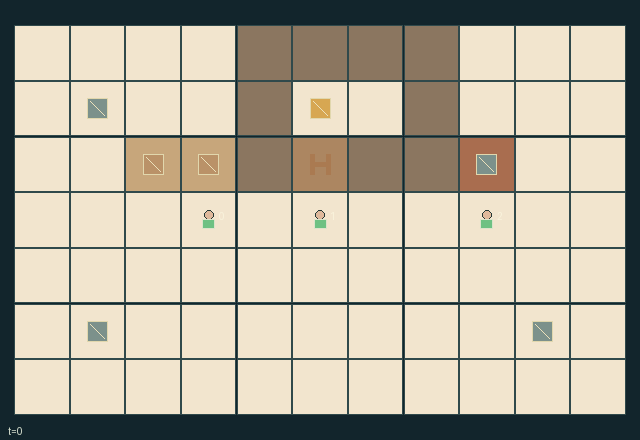

GI203 · Proofing House

Serve two plain and two seeded loaves from finite ingredients using the three reusable trays.
Identity and original contract
3 independently actionable roles; 16 discrete commands per role; 167 native observation columns per role; original horizon 180 steps. Declared per-step reward range: -4 to 6. Observation regime: fully_observable.
Source SHA-256: e635befe15ccb733159f2eccfc5d2594e90b39aa33dea69118cfceb21f087ee5
The objective, rewards, population, map and horizon remain original. A preview is not a success claim.
Objective and gameplay
Serve two plain and two seeded loaves from finite ingredients using the three reusable trays.
Opening access to shared proofing shelves changes every sheltered batch's proof rate. Seeded kneading leaves a surface trace inherited by later dough; washing the finite boards consumes shared water. Moving trays clears or occupies proofing shelves and the one oven.
- Carry one tray at a time. Pick an accessible tray within one cell; put it on the free cell ahead. Shelf pickup requires an open cupboard door.
- Knead a loose raw batch on a nearby board. Seeded batches and existing board trace leave seed trace on both the batch and the surface.
- Wash an unoccupied dirty board to clear its trace, or discard and wash a carried batch at the sink. Each uses one of eight shared wash-water units.
- A closed, unvented cupboard targets warmth three; ventilation targets two, and an open door targets one. Warmth changes by one per tick.
- Closed-shelf proof grows by warmth minus one per tick. Other proofing batches rise only on every third tick. Proof above twelve spoils a batch.
- The oven holds one tray. Baking freezes proof; three hot ticks make a loaf ready, and seven hot ticks burn a loaf left in the oven.
- Plain service accepts proof five through eight and no seed trace. Seeded service accepts proof seven through ten. Serve at the hatch.
- Shared loaf rewards plus owner/server bonuses compete with individual action and disposal costs. All rules use the native state and actions.
Ending: Success when accepted counts reach two for both recipes. Failure when either recipe's accepted plus pantry plus unspoiled active batches falls below two, unless success. Otherwise truncate at 180.
What this game explores
Resource commons & externalities: An action changes a persistent resource or burden that another role also encounters. Compare extraction with maintenance and record the downstream resource trajectory.
Complementary production & service: A useful outcome requires ordered stages, scarce equipment or another role's capability. Measure real completed products and resource circulation rather than counting intermediate actions as success.
Joint transport & shared access: Positions, load geometry, occupancy and persistent access constrain whose action can succeed next. Distinguish physical handoff, shared controls and simultaneous force from a cosmetic cooperation label.
Survival, protection & rescue: Protection and repair alter another role's future feasible actions. Record losses, exposure, rescue and infrastructure as well as delivery; survival is determined by the actual kernel.
These are questions supported by rule structure, not observed learning effects.
Play it: operating walkthrough
crucibles play --game gi203Keep Python running and open its printed address. Select this game, set a seed and press Create session. The game itself is always English.
Assign a role range to Host with Assign / take over, or Assign all roles. Invite a second participant with Create player invitation, then assign a disjoint subset. Every original role is available.
For every owned role choose a legal command and press Queue. Arrow keys / WASD queue a declared directional action for the current role camera when available. Space or Advance one joint step advances everyone together. Non-directional games use the selectors.
Unqueued roles use the labelled untrained uniform-legal policy. Take over or release roles before the next step without resetting. Full-state debug is privileged and permanently logged; role cameras preserve permissions. Close the session to retain logs. Server restart does not restore sessions.
Complete command reference
IDs and English labels exactly match the manifest. Availability depends on role, resources, location and phase. An available action can still have no productive effect.
0·Wait
1·Step or face north
2·Step or face east
3·Step or face south
4·Step or face west
5·Pick up lowest-ID accessible tray within one cell
6·Put carried tray on the cell ahead
7·Fill empty carried tray with plain dough at pantry
8·Fill empty carried tray with seeded dough at pantry
9·Knead nearby raw dough on a board
10·Open or close the cupboard door
11·Toggle cupboard ventilation
12·Put carried proofing dough in the free oven
13·Serve acceptable carried baked loaf at hatch
14·Wash an empty dirty board using one water
15·Discard batch and wash carried tray at sink
Roles and capability identifiers
These original role names describe capabilities, not interchangeable skins. Check each owned role's legal selector before planning handoffs.
agent_0·Kneading-board worker; may perform every action
agent_1·Cupboard attendant; may perform every action
agent_2·Oven and service porter; may perform every action
Information and observation permissions
Fully observable native kitchen. Every role gets the same complete map, worker/tray/surface/station data, cupboard state, resource ledgers and event flags. All entity groups remain active and public; empty trays are persistent reusable objects.
The GIF is full-state debug and may reveal hidden entities or private state. Train on obs[agent], not the picture, state tree or another role's private row. Field slices and visibility are in the original manifest.
Reinforcement-learning integration
import jax
from crucibles_jaxmarl import make
env = make("gi203")
key = jax.random.PRNGKey(0)
key, rk, ak, sk = jax.random.split(key, 4)
obs, state = jax.jit(env.reset)(rk)
actions = env.sample_actions(ak, state)
obs, state, rewards, dones, info = jax.jit(env.step_env)(sk, state, actions)
done = dones["__all__"]Observations are float32 vectors of width 167; actions are scalar int32; masks have 16 entries. Supply all 3 roles each transition. Masked sampling is an engineering reference, not a trained learner.
step_env retains terminal data without reset. step performs outer autoreset and keeps terminal data in info["raw_state"] and info["raw_observation"]. Use dones["__all__"] for episode boundaries; separate completion, failure and time limit in analysis.
JIT or vmap equal identities and shapes. Split independent reset, policy and transition keys. Group different shapes explicitly; do not shrink the population or horizon. Host rendering stays outside training.
Training questions and fair evaluation
Define valid completion from the objective before fitting. Preserve original rewards and also report real deliveries/services, losses, resource state, unresolved episodes and per-role returns. Animation is not a reward signal.
An action changes a persistent resource or burden that another role also encounters. Compare extraction with maintenance and record the downstream resource trajectory.
A useful outcome requires ordered stages, scarce equipment or another role's capability. Measure real completed products and resource circulation rather than counting intermediate actions as success.
Positions, load geometry, occupancy and persistent access constrain whose action can succeed next. Distinguish physical handoff, shared controls and simultaneous force from a cosmetic cooperation label.
Protection and repair alter another role's future feasible actions. Record losses, exposure, rescue and infrastructure as well as delivery; survival is determined by the actual kernel.
Compare memory, communication or centralized critics under matched actor information. Declare critic access; keep actor inputs role-filtered. Match partner/opponent distributions, masks, compute and checkpoint selection. Final tests never enter fitting or selection.
Independent training runs or source-pairing blocks are inferential units; episodes from one policy are not independent training replications. Save hashes, keys, versions, device, time and cost. Negative, zero, failed and indeterminate outcomes are valid. No trained checkpoint or target score is supplied.
Classification and evidence
Overlapping editorial labels are reading aids, not proof of novelty, difficulty, strategic equivalence or learning effects.
- Resource commons & externalities
- Evidence
manifest.task.objective: Serve two plain and two seeded loaves from finite ingredients using the three reusable trays.
- Evidence
manifest.actions.8: Fill empty carried tray with seeded dough at pantry
- Evidence
manifest.actions.14: Wash an empty dirty board using one water
- Complementary production & service
- Evidence
manifest.task.objective: Serve two plain and two seeded loaves from finite ingredients using the three reusable trays.
- Evidence
manifest.actions.5: Pick up lowest-ID accessible tray within one cell
- Evidence
manifest.actions.6: Put carried tray on the cell ahead
- Joint transport & shared access
- Evidence
manifest.actions.6: Put carried tray on the cell ahead
- Evidence
manifest.actions.7: Fill empty carried tray with plain dough at pantry
- Evidence
manifest.actions.8: Fill empty carried tray with seeded dough at pantry
- Survival, protection & rescue
- Evidence
scene.rules.3: A closed, unvented cupboard targets warmth three; ventilation targets two, and an open door targets one. Warmth changes by one per tick.
- Evidence
scene.rules.4: Closed-shelf proof grows by warmth minus one per tick. Other proofing batches rise only on every third tick. Proof above twelve spoils a batch.
Source, receipts and preview limits
The world-only English GIF replays saved untrained legal actions through the original kernel. At most 25 actual endpoints include initial and terminal state; no invented interpolation. It is full-state debug, not the role observation.
Original source, observation slices, manifest and mechanism
Native receipt · Presentation receipt
Engineering passes do not establish learning. Nonzero floating differences remain recorded and undetermined; no new tolerance was introduced. Human scores remain unverified.